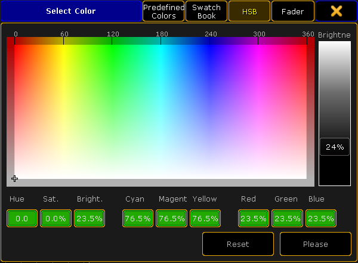
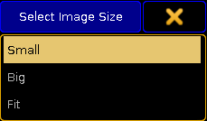

To open the options of the layout view, tap in the upper left corner of the view.
The option dialog opens.
Layout view options
To navigate through different functions of the options, tap the corresponding tabs below the title bar of the layout view options.
Pool Element Defaults
Important:
Settings that are made in the tabs Pool Element Default and Fixt./Chan. Defaults will be applied with the next elements you add to the layout.
To change the size of pool elements, tap the buttons below Size X and Size Y accordingly.
-The calculator opens.
-Type the size of the elements here.
Next, adjust the font size:
-Tap the drop-down box below Font Size.
-The pop-up Select Font Size opens.
Pop-up – Select Font Size
-Now, tap to select one of the three font sizes.
To enable or disable the ID, name or type of the element in the layout view, tap the buttons below Show ID, Show Name or Show Type.
After setting this option, adjust the background color, border color and the text color of an element:
-Tap the buttons below Background Color, Border Color and Text Color.
-The pop-up Select Color opens.

Pop-up – Select Color
-Now, set set the display of colors and tap to choose between Predefined Colors, Swatch Book, HSB and Fader.
-To change the color, tap the color diagram or tap the buttons with the percentage number at the bottom of the diagram.
-To apply the color selected, tap Please.
-To reset the color, tap Reset or Reset to White.
Then, set the display of the symbols:
-Tap the drop-down button below Symbol and the pop-up Select Symbol opens.
Pop-up – Select Symbol
-Now, tap to select one of the three options.
To enable or disable the display of the dimmer bar and dimmer value, tap the buttons below Show Dimmer Bar and Show Dimmer Value.
Then, select the image size:
-Tap the drop-down button below Image Size.
-The pop-up Select Image Size opens.

Pop-up – Select Image Size
-Tap to select one of the three image sizes.
Select the display of objects:
-Tap the drop-down button below Visualization.
-The pop-up Select Visualization opens.
Pop-up – Select Visualization
-Tap to select one of the options.
You have now adjusted the defaults for the pool elements in the current layout to your liking.
Important:
If you would like to apply these settings to new layouts, tap Save to Default in the title bar of the Layout Options.
Fixt. / Chan. Defaults
The default options of fixtures and channels are similar to those of the pool elements. See Pool Element Defaults for orientation. However, there are still few differences there.
To enable or disable the display of the fixture or channel IDs in the layout view, tap the buttons below Show Fixture ID or Show Channel ID.
Next, enable or disable the notification of RDM in the layout view:
-Tap the button below RDM Notifications.
If you enable the notification of RDM, RDM alert or warning will be shown in the layout view. For more information on RDM notifications see Configure RDM notifications.
Layout Data
Layout data refers to single layouts only.
Set the size of the grids:
-To adjust the width and length of the grid or the snap grid, tap either the buttons below Grid X and Grid Y or the buttonsbelow Snap Grid X and Snap Grid Y.
-The calculator opens.
-Now, type the size of of the corresponding grid.
Hint:
The grid stays visible whenever you edit its size. To make the grid invisible again, set one of the axes to zero.
Enable or disable the snap grid:
-It is possible for the snap grid to stay always visible whenever moving an object.
-To do so, tap the button below Snap Always to toggle it to Yes.
After setting the grid, select the background color:
-Tap the button below Background.
-The pop-up Select Color opens.
-To manage the color diagram, see Pool Element Defaults.
To display the markers in the fixtures and channels, toggle the button below Marker to Yes.
To turn on the fast call, toggle the button below Fast Call to Yes.
Hint:
If the fast call is enabled in the tab Title Buttons, the button Fast Call will be highlighted in red in the title bar of the layout view.
Next, select the playback you would like to use:
-Tap the button below Pool Playback.
-The pop-up Select Pool Playback opens.
Pop-up – Select Pool Playback
For more information on playback see Cues and sequences – Playing back cues.
-Select one option here.
Then, select a layer by tapping the drop-down button below Select Layer.
The pop-up Select Layer opens.
Pop-up – Select Layer
For more information on layers see Layers in sheets – channel sheet and fixture sheet.
-Select one of the three layers here.
To visualize the effects Gobo and Color even if the dimmer is closed, tap the button below Symbols Features and toggle it to Always.
If the features are to comply with the dimmer, tap and toggle to with Dimmer.
Tools
The following settings are applied to the current layout view.
To reverse the respective selection – select or move – enable the button below Double tap mode:
Tap the exact same spot twice and then move your finger either to move the screen or to select the objects.
Next, set the cue colors:
-Tap the drop-down button below Cue Colors.
-The pop-up Select Cue Colors opens.
Pop-up – Select Cue Colors
Off: Does not display cue colors.
On: Displays the cue colors of a selected executor.
My Exec: Displays the cue colors of the executor you have activated.
To display the zoom bar on the right of the layout view, enable the button below Zoom Bar visible.
To use the screen encoder for zooming in and out of the layout view, enable the button below Zoom Encoder.
Enable the horizontal and vertical scroll bar by tapping on the corresponding buttons below ScrollBar horizontal and ScrollBar vertical.
To enable ruler, tap the button below Rulers visible.
Hint:
When adjusting the grid the ruler proves itself to be very useful.
Choose an edit mode to select certain objects:
-Tap the drop-down button below Select Edit Mode.
-The pop-up Select Edit Mode opens.
Pop-up – Select Edit Mode
Title Buttons
Tap the button you would like to be displayed in the title bar of the layout view.
Enabled buttons have a yellow check mark and are highlighted in yellow.
Disabled buttons have a black background.
Close the Options
After adjusting the options to your liking tap in the upper right corner of the dialog. The window Layout Options closes.
To close the layout view altogether, tap Delete Window.